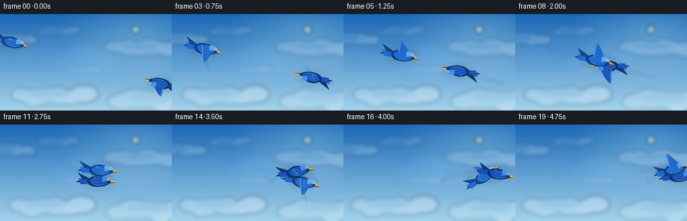
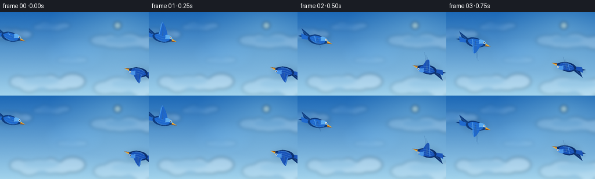
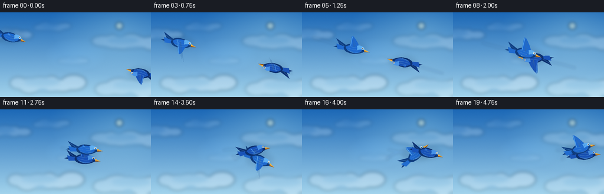
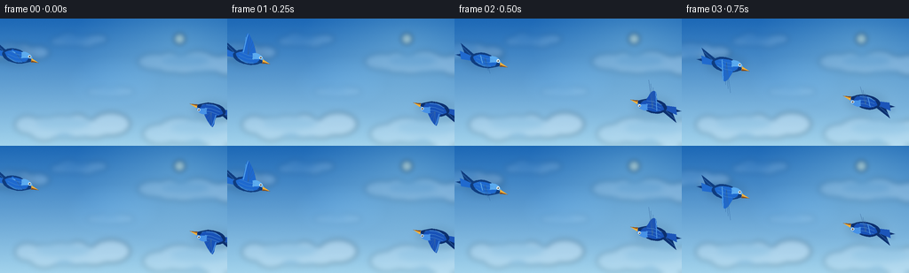

CODING AGENTS AS PIXEL WORLD MODELS
traex/GPT-5.6-Sol · instance_preservation_0018
点击播放 · 原生 RGB 像素
逐轮保存的候选
回放视频、检查图与代码变化。
每份候选均可单独播放。实际图片检查记录在下方工具轨迹中。
候选 01播放与检查图
点击播放 · 原生 RGB 像素


展开代码变化
--- 上一保存版本
+++ 本次保存版本
@@ -0,0 +1,263 @@
+from pathlib import Path
+import math
+import numpy as np
+from PIL import Image, ImageDraw, ImageFilter
+import artifact_io
+
+# PixelWorld case: procedural text-to-video, no external assets.
+W, H, N, FPS = 256, 144, 20, 4.0
+SS = 3
+RW, RH = W * SS, H * SS
+ROOT = Path(__file__).resolve().parent
+rng = np.random.default_rng(1801)
+
+
+def smoothstep(x):
+ x = np.clip(x, 0.0, 1.0)
+ return x*x*(3.0 - 2.0*x)
+
+
+def bird_positions(t):
+ """Two tracks converge, then braid around a shared flight path."""
+ join = 0.43
+ if t <= join:
+ u = smoothstep(t / join)
+ # Approach on crossing diagonals with a slight natural bob.
+ a = np.array([18 + 104*u, 42 + 27*u + 2.0*math.sin(math.pi*u)])
+ b = np.array([239 - 102*u, 104 - 26*u - 1.5*math.sin(math.pi*u)])
+ else:
+ s = smoothstep((t-join)/(1-join))
+ # Moving formation center; widening then tightening corkscrew.
+ c = np.array([129 + 112*s, 74 + 5*math.sin(math.pi*s) - 2*s])
+ radius = 10.2 + 3.0*math.sin(math.pi*s) - 1.7*s
+ theta = math.atan2(-5.0, -8.0) + 2.16*math.pi*s
+ off = np.array([radius*math.cos(theta), 0.72*radius*math.sin(theta)])
+ a, b = c + off, c - off
+ return a, b
+
+# Precompute slightly oversampled positions and finite-difference headings.
+ts = np.linspace(0, 1, N)
+tracks = np.array([bird_positions(float(t)) for t in ts]) # frame,bird,xy
+vels = np.empty_like(tracks)
+for i in range(N):
+ lo, hi = max(0, i-1), min(N-1, i+1)
+ vels[i] = tracks[hi] - tracks[lo]
+
+
+def scaled_poly(draw, pts, fill, outline=None, width=1):
+ q = [(int(x*SS), int(y*SS)) for x, y in pts]
+ draw.polygon(q, fill=fill)
+ if outline:
+ draw.line(q+[q[0]], fill=outline, width=max(1, width*SS), joint='curve')
+
+
+def cloud_layer(frame_i):
+ """Soft multi-depth painted clouds with very slow parallax."""
+ lay = Image.new('RGBA', (RW, RH), (0,0,0,0))
+ d = ImageDraw.Draw(lay, 'RGBA')
+ # x, y, width, height, alpha, depth
+ clouds = [
+ (-28, 27, 76, 20, 54, .45), (61, 17, 54, 15, 36, .30),
+ (169, 38, 92, 25, 56, .50), (26, 108, 104, 28, 78, .80),
+ (176, 112, 115, 31, 70, .70), (102, 77, 47, 12, 27, .25),
+ ]
+ drift = frame_i * 0.42
+ for ci, (x,y,cw,ch,a,dep) in enumerate(clouds):
+ x -= drift*dep
+ # broad shadow shelf
+ d.ellipse(((x-4)*SS, (y+ch*.16)*SS, (x+cw+4)*SS, (y+ch)*SS),
+ fill=(83,139,189,int(a*.42)))
+ # deterministic overlapping cotton forms
+ n = 6 if cw > 80 else 5
+ for j in range(n):
+ frac = j/(n-1)
+ cx = x + 5 + frac*(cw-10)
+ cy = y + ch*(.50 + .11*math.sin(ci*1.9+j*2.2))
+ rx = cw*(.14 + .035*((j+ci)%3))
+ ry = ch*(.37 + .10*((j+2*ci)%2))
+ d.ellipse(((cx-rx)*SS,(cy-ry)*SS,(cx+rx)*SS,(cy+ry)*SS),
+ fill=(250,253,255,int(a*(.70 + .05*j))))
+ # sunlit upper haze
+ d.ellipse(((x+cw*.14)*SS,(y+ch*.12)*SS,(x+cw*.72)*SS,(y+ch*.65)*SS),
+ fill=(255,255,255,int(a*.34)))
+ return lay.filter(ImageFilter.GaussianBlur(3.1*SS))
+
+
+def base_sky(frame_i):
+ yy, xx = np.mgrid[0:RH, 0:RW]
+ yf = yy/(RH-1)
+ top = np.array([33, 111, 190.], float)
+ bot = np.array([167, 218, 244.], float)
+ arr = top[None,None,:]*(1-yf[...,None]) + bot[None,None,:]*yf[...,None]
+ # sun glow in upper right
+ sx, sy = .79*RW, .16*RH
+ dist = np.sqrt(((xx-sx)/(0.46*RW))**2 + ((yy-sy)/(0.58*RH))**2)
+ glow = np.clip(1-dist, 0, 1)[...,None]
+ arr += glow*np.array([34,29,13.])[None,None,:]
+ # subtle cinematic edge darkening
+ nx, ny = (xx-RW/2)/(RW/2), (yy-RH/2)/(RH/2)
+ vig = np.clip((nx*nx + ny*ny)*6.0, 0, 1)[...,None]
+ arr -= vig*np.array([5,7,8.])[None,None,:]
+ # tiny stable atmospheric texture
+ noise = rng.normal(0, .65, (RH,RW,1))
+ arr += noise
+ return Image.fromarray(np.uint8(np.clip(arr,0,255)), 'RGB').convert('RGBA')
+
+
+def transform_points(points, pos, angle, scale=1.0):
+ ca, sa = math.cos(angle), math.sin(angle)
+ out=[]
+ for x,y in points:
+ x,y=x*scale,y*scale
+ out.append((pos[0]+ca*x-sa*y, pos[1]+sa*x+ca*y))
+ return out
+
+
+def cubic(p0,p1,p2,p3,n=12):
+ out=[]
+ for u in np.linspace(0,1,n):
+ v=1-u
+ out.append((v**3*p0[0]+3*v*v*u*p1[0]+3*v*u*u*p2[0]+u**3*p3[0],
+ v**3*p0[1]+3*v*v*u*p1[1]+3*v*u*u*p2[1]+u**3*p3[1]))
+ return out
+
+
+def path_shape(segments):
+ out=[]
+ for seg in segments:
+ pts=cubic(*seg)
+ out.extend(pts if not out else pts[1:])
+ return out
+
+
+def draw_bird(canvas, pos, heading, phase, palette, scale=1.0):
+ """Layered side-view blue bird with an animated, articulated wing."""
+ ov = Image.new('RGBA', (RW,RH), (0,0,0,0))
+ d = ImageDraw.Draw(ov, 'RGBA')
+ ang = heading
+ def P(points): return [(int(x*SS),int(y*SS)) for x,y in transform_points(points,pos,ang,scale)]
+ def poly(points, color): d.polygon(P(points), fill=color)
+ def line(points, color, width): d.line(P(points), fill=color, width=max(1,int(width*SS*scale)), joint='curve')
+ dark, main, light, cyan = palette
+
+ # very soft local contact shadow/halo helps preserve silhouette over clouds
+ halo = Image.new('RGBA',(RW,RH),(0,0,0,0)); hd=ImageDraw.Draw(halo,'RGBA')
+ hd.ellipse(((pos[0]-24*scale)*SS,(pos[1]-12*scale)*SS,
+ (pos[0]+24*scale)*SS,(pos[1]+12*scale)*SS), fill=(9,42,80,25))
+ canvas.alpha_composite(halo.filter(ImageFilter.GaussianBlur(4*SS)))
+
+ flap = math.sin(phase)
+ # Tail fan sits behind the body, three persistent feathers.
+ poly([(-14,-3),(-33,-11),(-25,-1),(-35,4),(-14,5)], (dark[0],dark[1],dark[2],255))
+ poly([(-15,0),(-31,-2),(-27,7),(-12,5)], (main[0],main[1],main[2],245))
+ line([(-29,-7),(-14,1)], (light[0],light[1],light[2],145), .65)
+
+ # Far wing, offset and paler; same flap, visible as a separate plane.
+ ftip=(-4-4*flap, -4-19*flap)
+ far = path_shape([
+ ((-7,-4),(-4,-10),(ftip[0]-3,ftip[1]),ftip),
+ (ftip,(ftip[0]+7,ftip[1]+5),(8,-1),(5,2)),
+ ((5,2),(0,1),(-3,-1),(-7,-4))])
+ poly(far, (cyan[0],cyan[1],cyan[2],175))
+
+ # Main body: a smooth aerodynamic silhouette.
+ body = path_shape([
+ ((-17,1),(-13,-8),(-1,-10),(8,-7)),
+ ((8,-7),(16,-7),(20,-3),(21,1)),
+ ((21,1),(16,3),(12,8),(1,9)),
+ ((1,9),(-9,10),(-17,7),(-17,1))])
+ poly(body, (dark[0],dark[1],dark[2],255))
+ # body midtone inset and belly sheen
+ inset=path_shape([
+ ((-14,0),(-9,-6),(3,-8),(12,-5)),
+ ((12,-5),(17,-3),(16,3),(8,6)),
+ ((8,6),(-2,9),(-11,6),(-14,0))])
+ poly(inset, (main[0],main[1],main[2],255))
+ belly=path_shape([
+ ((-9,4),(-1,9),(10,7),(15,2)),
+ ((15,2),(9,7),(-2,10),(-9,4))])
+ poly(belly, (cyan[0],cyan[1],cyan[2],150))
+
+ # Near wing: broad primary shape with visible feather fingers.
+ tip=(-2-5*flap, -3-25*flap)
+ shoulder=(3,-5)
+ wing=path_shape([
+ ((-8,-4),(-5,-9),(tip[0]-4,tip[1]-2),tip),
+ (tip,(tip[0]+7,tip[1]+4),(11,-5),(12,-1)),
+ ((12,-1),(4,1),(-3,0),(-8,-4))])
+ poly(wing, (main[0],main[1],main[2],255))
+ # highlight along leading edge
+ line([(-6,-4),((tip[0]-3)*.72,(tip[1]-2)*.72),tip],
+ (light[0],light[1],light[2],220), 1.15)
+ # separated primary feather rays
+ for k in range(4):
+ q=k/3
+ end=(tip[0]+q*12, tip[1]+q*(8+4*abs(flap)))
+ line([(0,-3),end], (dark[0],dark[1],dark[2],130), .55)
+
+ # Neck/head blue cap gives volume and persistent identity.
+ cap=path_shape([
+ ((5,-6),(10,-10),(19,-7),(21,-1)),
+ ((21,-1),(16,-3),(11,-1),(7,1)),
+ ((7,1),(7,-2),(6,-5),(5,-6))])
+ poly(cap, (light[0],light[1],light[2],235))
+ # tiny pointed beak
+ poly([(19,-3),(29,0),(20,2)], (240,177,63,255))
+ poly([(20,0),(29,0),(20,2)], (135,80,30,255))
+ # eye rim and pinpoint
+ eye=transform_points([(16,-4)],pos,ang,scale)[0]
+ r=1.65*SS*scale
+ d.ellipse((eye[0]*SS-r,eye[1]*SS-r,eye[0]*SS+r,eye[1]*SS+r), fill=(236,245,241,255))
+ r2=.86*SS*scale
+ d.ellipse((eye[0]*SS-r2,eye[1]*SS-r2,eye[0]*SS+r2,eye[1]*SS+r2), fill=(9,19,29,255))
+ r3=.28*SS*scale
+ d.ellipse((eye[0]*SS-r3-.2*SS,eye[1]*SS-r3-.25*SS,eye[0]*SS+r3-.2*SS,eye[1]*SS+r3-.25*SS), fill=(255,255,255,255))
+
+ # Feather glints across body imply fine texture without visual clutter.
+ for yoff,alpha in [(-3,90),(1,75),(5,60)]:
+ line([(-10,yoff),(1,yoff+1),(9,yoff-.5)], (light[0],light[1],light[2],alpha), .45)
+ canvas.alpha_composite(ov)
+
+
+def draw_trails(im, idx):
+ trail=Image.new('RGBA',(RW,RH),(0,0,0,0)); d=ImageDraw.Draw(trail,'RGBA')
+ colors=[(56,139,231),(43,104,211)]
+ for b in range(2):
+ start=max(0,idx-5)
+ pts=[tuple(tracks[j,b]*SS) for j in range(start,idx+1)]
+ if len(pts)>1:
+ # soft ribbon and bright center, fading naturally toward the birds
+ d.line(pts, fill=colors[b]+(28,), width=4*SS, joint='curve')
+ d.line(pts, fill=(184,222,255,45), width=1*SS, joint='curve')
+ im.alpha_composite(trail.filter(ImageFilter.GaussianBlur(2.0*SS)))
+
+
+frames=[]
+palettes=[((15,61,128),(30,105,207),(92,174,244),(76,160,225)),
+ ((12,48,111),(24,82,184),(67,144,233),(55,137,217))]
+for i,t in enumerate(ts):
+ im=base_sky(i)
+ # faint sun disc behind atmospheric haze
+ sun=Image.new('RGBA',(RW,RH),(0,0,0,0)); sd=ImageDraw.Draw(sun,'RGBA')
+ sr=6.5*SS; sx,sy=.79*RW,.16*RH
+ sd.ellipse((sx-sr,sy-sr,sx+sr,sy+sr),fill=(255,248,202,95))
+ im.alpha_composite(sun.filter(ImageFilter.GaussianBlur(2.7*SS)))
+ im.alpha_composite(cloud_layer(i))
+ draw_trails(im,i)
+
+ # Draw back bird first if they overlap, based on implied vertical plane.
+ order=[1,0] if tracks[i,0,1] < tracks[i,1,1] else [0,1]
+ for b in order:
+ v=vels[i,b]
+ heading=math.atan2(v[1],v[0])
+ # cap extreme apparent pitch but retain direction changes
+ phase=2*math.pi*(5.2*t) + b*0.72
+ scale=0.91 + 0.05*math.sin(math.pi*t) + (0.015 if b==0 else -0.005)
+ draw_bird(im,tracks[i,b],heading,phase,palettes[b],scale)
+
+ frames.append(np.asarray(im.convert('RGB').resize((W,H),Image.Resampling.LANCZOS),dtype=np.uint8))
+
+frames=np.stack(frames)
+assert frames.shape==(N,H,W,3) and frames.dtype==np.uint8
+artifact_io.save(frames, ROOT)
+print(f"saved {len(frames)} RGB frames, {W}x{H}, {FPS:g} fps")
候选 02播放与检查图
点击播放 · 原生 RGB 像素


展开代码变化
--- 上一保存版本
+++ 本次保存版本
@@ -10,6 +10,7 @@
RW, RH = W * SS, H * SS
ROOT = Path(__file__).resolve().parent
rng = np.random.default_rng(1801)
+SKY_NOISE = rng.normal(0, .65, (RH, RW, 1))
def smoothstep(x):
@@ -28,7 +29,8 @@
else:
s = smoothstep((t-join)/(1-join))
# Moving formation center; widening then tightening corkscrew.
- c = np.array([129 + 112*s, 74 + 5*math.sin(math.pi*s) - 2*s])
+ # Keep both complete silhouettes visible through the final frame.
+ c = np.array([129 + 91*s, 74 + 5*math.sin(math.pi*s) - 2*s])
radius = 10.2 + 3.0*math.sin(math.pi*s) - 1.7*s
theta = math.atan2(-5.0, -8.0) + 2.16*math.pi*s
off = np.array([radius*math.cos(theta), 0.72*radius*math.sin(theta)])
@@ -99,9 +101,8 @@
vig = np.clip((nx*nx + ny*ny)*6.0, 0, 1)[...,None]
arr -= vig*np.array([5,7,8.])[None,None,:]
# tiny stable atmospheric texture
- noise = rng.normal(0, .65, (RH,RW,1))
- arr += noise
- return Image.fromarray(np.uint8(np.clip(arr,0,255)), 'RGB').convert('RGBA')
+ arr += SKY_NOISE
+ return Image.fromarray(np.uint8(np.clip(arr,0,255))).convert('RGBA')
def transform_points(points, pos, angle, scale=1.0):
可观测工具轨迹
实际执行的命令与返回图片。
命令 1exit 0
/bin/bash -lc "cat prompt.txt && printf '\\n--- GENERATION_RULES.md ---\\n' && cat GENERATION_RULES.md && printf '\\n--- task_spec.json ---\\n' && cat task_spec.json"
命令 2exit 0
/bin/bash -lc "find . -maxdepth 3 -type f -printf '%p\\n' | sort && printf '\\n--- binaries ---\\n' && command -v ffmpeg && command -v python3 && command -v convert || true"
命令 3exit 0
/bin/bash -lc 'cat artifact_io.py'
命令 4exit 0
/bin/bash -lc "python3 - <<'PY' mods=['numpy','PIL','cv2','imageio'] for m in mods: try: x=__import__(m); print(m, getattr(x,'__version__','ok')) except Exception as e: print(m,'ERR',e) PY"
命令 5exit 0
/bin/bash -lc "cat > generate.py <<'PY'
from pathlib import Path
import math
import numpy as np
from PIL import Image, ImageDraw, ImageFilter
import artifact_io
# PixelWorld case: procedural text-to-video, no external assets.
W, H, N, FPS = 256, 144, 20, 4.0
SS = 3
RW, RH = W * SS, H * SS
ROOT = Path(__file__).resolve().parent
rng = np.random.default_rng(1801)
def smoothstep(x):
x = np.clip(x, 0.0, 1.0)
return x*x*(3.0 - 2.0*x)
def bird_positions(t):
\"\"\"Two tracks converge, then braid around a shared flight path.\"\"\"
join = 0.43
if t <= join:
u = smoothstep(t / join)
# Approach on crossing diagonals with a slight natural bob.
a = np.array([18 + 104*u, 42 + 27*u + 2.0*math.sin(math.pi*u)])
b = np.array([239 - 102*u, 104 - 26*u - 1.5*math.sin(math.pi*u)])
else:
s = smoothstep((t-join)/(1-join))
# Moving formation center; widening then tightening corkscrew.
c = np.array([129 + 112*s, 74 + 5*math.sin(math.pi*s) - 2*s])
radius = 10.2 + 3.0*math.sin(math.pi*s) - 1.7*s
theta = math.atan2(-5.0, -8.0) + 2.16*math.pi*s
off = np.array([radius*math.cos(theta), 0.72*radius*math.sin(theta)])
a, b = c + off, c - off
return a, b
# Precompute slightly oversampled positions and finite-difference headings.
ts = np.linspace(0, 1, N)
tracks = np.array([bird_positions(float(t)) for t in ts]) # frame,bird,xy
vels = np.empty_like(tracks)
for i in range(N):
lo, hi = max(0, i-1), min(N-1, i+1)
vels[i] = tracks[hi] - tracks[lo]
def scaled_poly(draw, pts, fill, outline=None, width=1):
q = [(int(x*SS), int(y*SS)) for x, y in pts]
draw.polygon(q, fill=fill)
if outline:
draw.line(q+[q[0]], fill=outline, width=max(1, width*SS), joint='curve')
def cloud_layer(frame_i):
\"\"\"Soft multi-depth painted clouds with very slow parallax.\"\"\"
lay = Image.new('RGBA', (RW, RH), (0,0,0,0))
d = ImageDraw.Draw(lay, 'RGBA')
# x, y, width, height, alpha, depth
clouds = [
(-28, 27, 76, 20, 54, .45), (61, 17, 54, 15, 36, .30),
(169, 38, 92, 25, 56, .50), (26, 108, 104, 28, 78, .80),
(176, 112, 115, 31, 70, .70), (102, 77, 47, 12, 27, .25),
]
drift = frame_i * 0.42
for ci, (x,y,cw,ch,a,dep) in enumerate(clouds):
x -= drift*dep
# broad shadow shelf
d.ellipse(((x-4)*SS, (y+ch*.16)*SS, (x+cw+4)*SS, (y+ch)*SS),
fill=(83,139,189,int(a*.42)))
# deterministic overlapping cotton forms
n = 6 if cw > 80 else 5
for j in range(n):
frac = j/(n-1)
cx = x + 5 + frac*(cw-10)
cy = y + ch*(.50 + .11*math.sin(ci*1.9+j*2.2))
rx = cw*(.14 + .035*((j+ci)%3))
ry = ch*(.37 + .10*((j+2*ci)%2))
d.ellipse(((cx-rx)*SS,(cy-ry)*SS,(cx+rx)*SS,(cy+ry)*SS),
fill=(250,253,255,int(a*(.70 + .05*j))))
# sunlit upper haze
d.ellipse(((x+cw*.14)*SS,(y+ch*.12)*SS,(x+cw*.72)*SS,(y+ch*.65)*SS),
fill=(255,255,255,int(a*.34)))
return lay.filter(ImageFilter.GaussianBlur(3.1*SS))
def base_sky(frame_i):
yy, xx = np.mgrid[0:RH, 0:RW]
yf = yy/(RH-1)
top = np.array([33, 111, 190.], float)
bot = np.array([167, 218, 244.], float)
arr = top[None,None,:]*(1-yf[...,None]) + bot[None,None,:]*yf[...,None]
# sun glow in upper right
sx, sy = .79*RW, .16*RH
dist = np.sqrt(((xx-sx)/(0.46*RW))**2 + ((yy-sy)/(0.58*RH))**2)
glow = np.clip(1-dist, 0, 1)[...,None]
arr += glow*np.array([34,29,13.])[None,None,:]
# subtle cinematic edge darkening
nx, ny = (xx-RW/2)/(RW/2), (yy-RH/2)/(RH/2)
vig = np.clip((nx*nx + ny*ny)*6.0, 0, 1)[...,None]
arr -= vig*np.array([5,7,8.])[None,None,:]
# tiny stable atmospheric texture
noise = rng.normal(0, .65, (RH,RW,1))
arr += noise
return Image.fromarray(np.uint8(np.clip(arr,0,255)), 'RGB').convert('RGBA')
def transform_points(points, pos, angle, scale=1.0):
ca, sa = math.cos(angle), math.sin(angle)
out=[]
for x,y in points:
x,y=x*scale,y*scale
out.append((pos[0]+ca*x-sa*y, pos[1]+sa*x+ca*y))
return out
def cubic(p0,p1,p2,p3,n=12):
out=[]
for u in np.linspace(0,1,n):
v=1-u
out.append((v**3*p0[0]+3*v*v*u*p1[0]+3*v*u*u*p2[0]+u**3*p3[0],
v**3*p0[1]+3*v*v*u*p1[1]+3*v*u*u*p2[1]+u**3*p3[1]))
return out
def path_shape(segments):
out=[]
for seg in segments:
pts=cubic(*seg)
out.extend(pts if not out else pts[1:])
return out
def draw_bird(canvas, pos, heading, phase, palette, scale=1.0):
\"\"\"Layered side-view blue bird with an animated, articulated wing.\"\"\"
ov = Image.new('RGBA', (RW,RH), (0,0,0,0))
d = ImageDraw.Draw(ov, 'RGBA')
ang = heading
def P(points): return [(int(x*SS),int(y*SS)) for x,y in transform_points(points,pos,ang,scale)]
def poly(points, color): d.polygon(P(points), fill=color)
def line(points, color, width): d.line(P(points), fill=color, width=max(1,int(width*SS*scale)), joint='curve')
dark, main, light, cyan = palette
# very soft local contact shadow/halo helps preserve silhouette over clouds
halo = Image.new('RGBA',(RW,RH),(0,0,0,0)); hd=ImageDraw.Draw(halo,'RGBA')
hd.ellipse(((pos[0]-24*scale)*SS,(pos[1]-12*scale)*SS,
(pos[0]+24*scale)*SS,(pos[1]+12*scale)*SS), fill=(9,42,80,25))
canvas.alpha_composite(halo.filter(ImageFilter.GaussianBlur(4*SS)))
flap = math.sin(phase)
# Tail fan sits behind the body, three persistent feathers.
poly([(-14,-3),(-33,-11),(-25,-1),(-35,4),(-14,5)], (dark[0],dark[1],dark[2],255))
poly([(-15,0),(-31,-2),(-27,7),(-12,5)], (main[0],main[1],main[2],245))
line([(-29,-7),(-14,1)], (light[0],light[1],light[2],145), .65)
# Far wing, offset and paler; same flap, visible as a separate plane.
ftip=(-4-4*flap, -4-19*flap)
far = path_shape([
((-7,-4),(-4,-10),(ftip[0]-3,ftip[1]),ftip),
(ftip,(ftip[0]+7,ftip[1]+5),(8,-1),(5,2)),
((5,2),(0,1),(-3,-1),(-7,-4))])
poly(far, (cyan[0],cyan[1],cyan[2],175))
# Main body: a smooth aerodynamic silhouette.
body = path_shape([
((-17,1),(-13,-8),(-1,-10),(8,-7)),
((8,-7),(16,-7),(20,-3),(21,1)),
((21,1),(16,3),(12,8),(1,9)),
((1,9),(-9,10),(-17,7),(-17,1))])
poly(body, (dark[0],dark[1],dark[2],255))
# body midtone inset and belly sheen
inset=path_shape([
((-14,0),(-9,-6),(3,-8),(12,-5)),
((12,-5),(17,-3),(16,3),(8,6)),
((8,6),(-2,9),(-11,6),(-14,0))])
poly(inset, (main[0],main[1],main[2],255))
belly=path_shape([
((-9,4),(-1,9),(10,7),(15,2)),
((15,2),(9,7),(-2,10),(-9,4))])
poly(belly, (cyan[0],cyan[1],cyan[2],150))
# Near wing: broad primary shape with visible feather fingers.
tip=(-2-5*flap, -3-25*flap)
shoulder=(3,-5)
wing=path_shape([
((-8,-4),(-5,-9),(tip[0]-4,tip[1]-2),tip),
(tip,(tip[0]+7,tip[1]+4),(11,-5),(12,-1)),
((12,-1),(4,1),(-3,0),(-8,-4))])
poly(wing, (main[0],main[1],main[2],255))
# highlight along leading edge
line([(-6,-4),((tip[0]-3)*.72,(tip[1]-2)*.72),tip],
(light[0],light[1],light[2],220), 1.15)
# separated primary feather rays
for k in range(4):
q=k/3
end=(tip[0]+q*12, tip[1]+q*(8+4*abs(flap)))
line([(0,-3),end], (dark[0],dark[1],dark[2],130), .55)
# Neck/head blue cap gives volume and persistent identity.
cap=path_shape([
((5,-6),(10,-10),(19,-7),(21,-1)),
((21,-1),(16,-3),(11,-1),(7,1)),
((7,1),(7,-2),(6,-5),(5,-6))])
poly(cap, (light[0],light[1],light[2],235))
# tiny pointed beak
poly([(19,-3),(29,0),(20,2)], (240,177,63,255))
poly([(20,0),(29,0),(20,2)], (135,80,30,255))
# eye rim and pinpoint
eye=transform_points([(16,-4)],pos,ang,scale)[0]
r=1.65*SS*scale
d.ellipse((eye[0]*SS-r,eye[1]*SS-r,eye[0]*SS+r,eye[1]*SS+r), fill=(236,245,241,255))
r2=.86*SS*scale
d.ellipse((eye[0]*SS-r2,eye[1]*SS-r2,eye[0]*SS+r2,eye[1]*SS+r2), fill=(9,19,29,255))
r3=.28*SS*scale
d.ellipse((eye[0]*SS-r3-.2*SS,eye[1]*SS-r3-.25*SS,eye[0]*SS+r3-.2*SS,eye[1]*SS+r3-.25*SS), fill=(255,255,255,255))
# Feather glints across body imply fine texture without visual clutter.
for yoff,alpha in [(-3,90),(1,75),(5,60)]:
line([(-10,yoff),(1,yoff+1),(9,yoff-.5)], (light[0],light[1],light[2],alpha), .45)
canvas.alpha_composite(ov)
def draw_trails(im, idx):
trail=Image.new('RGBA',(RW,RH),(0,0,0,0)); d=ImageDraw.Draw(trail,'RGBA')
colors=[(56,139,231),(43,104,211)]
for b in range(2):
start=max(0,idx-5)
pts=[tuple(tracks[j,b]*SS) for j in range(start,idx+1)]
if len(pts)>1:
# soft ribbon and bright center, fading naturally toward the birds
d.line(pts, fill=colors[b]+(28,), width=4*SS, joint='curve')
d.line(pts, fill=(184,222,255,45), width=1*SS, joint='curve')
im.alpha_composite(trail.filter(ImageFilter.GaussianBlur(2.0*SS)))
frames=[]
palettes=[((15,61,128),(30,105,207),(92,174,244),(76,160,225)),
((12,48,111),(24,82,184),(67,144,233),(55,137,217))]
for i,t in enumerate(ts):
im=base_sky(i)
# faint sun disc behind atmospheric haze
sun=Image.new('RGBA',(RW,RH),(0,0,0,0)); sd=ImageDraw.Draw(sun,'RGBA')
sr=6.5*SS; sx,sy=.79*RW,.16*RH
sd.ellipse((sx-sr,sy-sr,sx+sr,sy+sr),fill=(255,248,202,95))
im.alpha_composite(sun.filter(ImageFilter.GaussianBlur(2.7*SS)))
im.alpha_composite(cloud_layer(i))
draw_trails(im,i)
# Draw back bird first if they overlap, based on implied vertical plane.
order=[1,0] if tracks[i,0,1] < tracks[i,1,1] else [0,1]
for b in order:
v=vels[i,b]
heading=math.atan2(v[1],v[0])
# cap extreme apparent pitch but retain direction changes
phase=2*math.pi*(5.2*t) + b*0.72
scale=0.91 + 0.05*math.sin(math.pi*t) + (0.015 if b==0 else -0.005)
draw_bird(im,tracks[i,b],heading,phase,palettes[b],scale)
frames.append(np.asarray(im.convert('RGB').resize((W,H),Image.Resampling.LANCZOS),dtype=np.uint8))
frames=np.stack(frames)
assert frames.shape==(N,H,W,3) and frames.dtype==np.uint8
artifact_io.save(frames, ROOT)
print(f\"saved {len(frames)} RGB frames, {W}x{H}, {FPS:g} fps\")
PY
python3 generate.py
ls -lh pixels.npz inspection.png transition_check.png index.html frames/00.png frames/19.png"命令 6exit 0
/bin/bash -lc "python3 - <<'PY'
import generate
import numpy as np
print('tracks')
for i in [0,3,5,7,8,9,11,13,15,17,19]: print(i,np.round(generate.tracks[i],1).tolist())
# validate file payload and temporal/color statistics
z=np.load('pixels.npz')['pixels']; print('pixels',z.shape,z.dtype)
f=np.stack([np.array(__import__('PIL').Image.open(f'frames/{i:02d}.png')) for i in range(20)])
print('frame rgb means',np.round(f.mean((1,2)),1).tolist())
print('motion MAD',np.round(np.abs(np.diff(f.astype(float),axis=0)).mean((1,2,3)),2).tolist())
PY"命令 7exit 0
/bin/bash -lc "python3 generate.py && python3 - <<'PY'
from pathlib import Path
import json, numpy as np
from PIL import Image
spec=json.loads(Path('task_spec.json').read_text())
files=sorted(Path('frames').glob('*.png'))
assert len(files)==spec['frames']==20
arr=np.stack([np.asarray(Image.open(p).convert('RGB')) for p in files])
assert arr.shape==(20,144,256,3) and arr.dtype==np.uint8
packed=np.load('pixels.npz')['pixels']
assert packed.shape==(144,256,20)
for p in ['pixels.npz','index.html','inspection.png','transition_check.png','generate.py']:
assert Path(p).is_file() and Path(p).stat().st_size>0
print('VALID', arr.shape, arr.dtype, 'frames=',len(files), 'temporal_MAD=',round(float(np.abs(np.diff(arr.astype(np.int16),axis=0)).mean()),3))
print('artifact sizes:', {p:Path(p).stat().st_size for p in ['pixels.npz','index.html','inspection.png']})
PY"保存候选 2 份；完成命令 7 次；可验证图片返回 0 张。原始 API 响应与完整日志保留在本地。